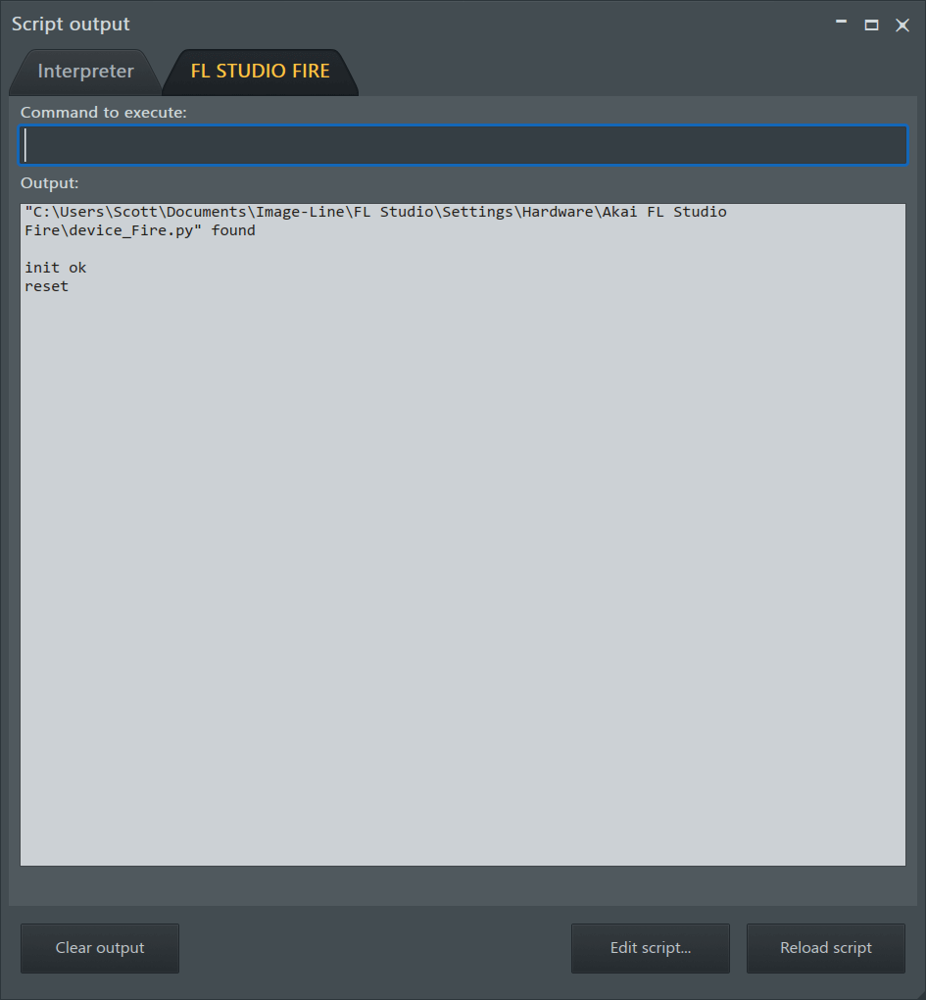

|
MIDI
MIDI Scripting Device API reference
MIDI scripting allows native support for any MIDI controller. Scripts are written in 'Python' code, stored in a plain text file, that FL Studio uses to translate commands between the controller and FL Studio. MIDI communication can go in both directions; The controller can access features in the FL Studio code (as listed below), and FL Studio can send data back to the controller (such as lighting pads or showing track names).
FL Studio MIDI scripts are based on Python. You do not need to install anything, FL Studio will handle scripts directly. When scripts are created in the folders shown below, the scripted device will display in the Controller type menu under the MIDI Settings tab. From there, select the controller and use it as normal.
NOTES:
- Script hierarchy - As FL Studio natively handles many MIDI functions and messages, this allows you to write simple scripts to handle specific cases or inputs and leave the rest to FL Studio's generic MIDI support. For example, you do not need to tell FL Studio what to do with MIDI notes. If the script doesn't specifically make changes to default behavior, FL Studio will handle them as normal.
- Scripts are complex - With power and flexibility comes complexity. MIDI scripting is intended for hardware manufacturers and advanced users to create custom support for MIDI controllers. If you are new to programming, MIDI scripting will be confronting and confusing at first. This is normal, but patience and persistence will be rewarded! There are some simple examples to get started on our user forum listed below.
Support Forum
FL Studio customers can access the MIDI Controller Scripting forum to discuss scripting, share scripts, make feature requests and report issues.
Script Locations and File Names
FL Studio will check the following locations for MIDI Scripts and related files:
- Script files - Scripted device files are located in the User data folder under ... Documents\Image-Line\FL Studio\Settings\Hardware\devicename\device_devicename.py.
- Script folder naming - The sub folder 'devicename' is arbitrary and can be anything you like. Normally you would use the name of the MIDI hardware you are scripting for.
- Script file naming - The 'device_devicename' (bold part) can be anything you like to identify the MIDI script file. NOTE: 'device_devicename.py' is mandatory for the device to be processed by FL Studio. You can use spaces and capitals for devicename e.g. 'device_My PHAT Controller.py'.
- The controller name - Shown in the MIDI Settings > Controller type menu is defined on first line of 'device_devicename.py' script file, e.g. #name=AKAI FL Studio Fire. This will appear in the device list as 'AKAI FL Studio Fire (user)'. The (user) suffix is to distinguish your device scripts from installed factory scripts.
The controller name is required and your script will be not recognized by FL Studio without it!
- Editing .py script files - Use any text editor. If you are editing existing scripts, make a backup of the original files.
- Device (launchmap) pages (optional) - Files are located in ... Documents\Image-Line\FL Studio\Settings\Hardware\devicename\Page(number).scr. Device pages are special use-case and not normally used for standard MIDI controllers.
- Launchmap files - Launchmaps are custom files that provide different behavior for a controller depending on what mode it is launched in. See the MIDI Controller reference post Custom controller layouts. See also the launchMapPages module.
- Custom modules - You can include custom or external modules by placing them in the FL Studio installation, shared library folder:
- Windows - ... /Program Files (x86)/Image-Line/Shared/Python/Lib
- macOS - ... \Library\Application support\Image-line\Shared\Python\Lib
NOTE: You do not need to install the Python compiler to edit and maintain these scripts, you can open and edit .py files with any text editor. FL Studio MIDI scripting is based on events (Script events) fired by FL Studio and responses (Callbacks) to these events.
Getting Started Tutorials
The basics of working with Script Files:
To start from scratch, you need to create a script file, in the correct location in the FL Studio User data folder. This section and video shows you how to do that, step-by-step.
- Create a folder - Using the file browser in your Operating System of choice, browse to your FL Studio User data folder, usually '...Documents\Image-Line\FL Studio\Settings\Hardware\YourScriptSubFolder', where 'YourScriptSubFolder' is a sub folder you created for your script.
- Create a script file - In the 'YourScriptSubFolder' folder, create a plain text file 'device_YourScriptName.txt'. Open the text file and add the following line of text, which will be the script name that appears in the MIDI Settings > Controller type list:
NOTE: There's more information about predefined paramaters here.
- Change the file extension type to .py - Change the file extension type from .txt to .py. To do this you must have file-type extensions activated in the browser on your computer. After that, just rename a plain text file 'device_ThisIsMyFistScript.txt' to 'device_ThisIsMyFistScript.py', for example. You can also use the operating system options to open files of type .py in the text editor of your choice.
- Select your script in the MIDI Settings - You will now see your script in the MIDI Settings > Controller type list as My First Script (user).
- Edit the script - Open this script in FL Studio from the VIEW (menu) > Script output > Edit script (button)
- The following video shows steps 4 and 5 above.
This video shows how to find MIDI data coming from a controller, to use in a script:
After creating a script. You will probably want to identify data coming from your controller you want to link to a function in FL Studio, this video shows such an example.
NOTE: For the Interpreter tab to work you must select a script from the MIDI Settings > Controller type option.
The script used in this tutorial is available here.
Script Modules
Script functions (callbacks) are the instructions FL Studio will recognize and act upon in the Python code. Callbacks are organized in modules according to FL Studio target features (Playlist, Patterns, Device etc.). To use callbacks in script, you must load the callback module by including it at the top of the script with 'import':
- import module (e.g. import playlist) - NOTE: Module names use Lower Camel Case. Available modules:
Script Functions
Callbacks are functions that execute features or act on components in FL Studio. You can for example, use a callback function to name an instrument Channel, move a Channel up/down or delete it. Or, more simply remap the transport buttons in FL Studio to your controller. In other words, callbacks give you deep control over FL Studio and how it operates. To use function in script use following syntax:
- module.functionName(arguments) - Where 'module' is module name. NOTE: Function names use Lower Camel Case.
Script Events
Script events are functions called by FL Studio, if script needs to respond to the event, add event function to script:
- def eventName(arguments) - Write response code inside this function. NOTE: Event names use Camel Case
Script predefined parameters
Script 'predefined parameters' are a way to tell FL Studio some additional information about your script. Include predefined parameters at the top of main .py file. Predefines include:
- name (required) - The name of your script shown in the MIDI Settings > Controller type list.
- url (optional) - Image-Line MIDI Scripting forum link, where users can discuss or get help for your script. URLs must start with https://forum.image-line.com. For example, the link to the 'Working Scripts list' is https://forum.image-line.com/viewtopic.php?f=1994&t=228179. You can link to any post in the MIDI Scripting forum.
- receiveFrom (optional) - Specify the device name to receive MIDI events from. If specified, FL Studio will dispatch messages (sent via device.dispatch function) from the specified device.
- supportedDevices (optional) - Comma separated list of device names supported by your script. If specified, FL Studio will automatically link a script to devices matching names in this list.
- supportedHardwareIds (optional) - Comma separated list of device hardware id's supported by your script. If specified, FL Studio will automatically link the script to devices with same hardware ids. TIP: You can use partial hardware ID's to omit device firmware version numbers.
Example:
-
# name=My Launch Control script
# url=https://forum.image-line.com/viewtopic.php?p=1494175#p1494175
# supportedDevices=Launch Control XL,Launch Control XL mkII
# receiveFrom=Forward Device
# supportedHardwareIds=00 20 29 61 00 00 00 00 00 02 07
Tools for Testing Functions and Editing Scripts
Open the VIEW menu > Script output window:
- Interpreter - This Tab allows you to enter and test Script commands to check they work as expected.
- Script - When a MIDI Script is selected in the MIDI Settings the second tab will show with the name of the device (in this case FL STUDIO FIRE). When there are unhandled MIDI events, the data will be displayed here. NOTE: The Debugging log tab also shows ALL incoming MIDI data.

NOTE: If your script loads and compiles correctly, you will see init ok, Initialization OK, in the Script window.
- Clear output - Clears the tabs data.
- Edit script - Open the current script in the system text editor to make changes.
- Reload - Apply the edited script so you don't need to restart FL Studio to test it.
Script events
| Name |
Arguments |
Documentation |
Version |
| OnInit |
- |
Called when the script has been started. |
1 |
| OnDeInit |
- |
Called before the script will be stopped. |
1 |
| OnMidiIn |
eventData
|
Called first when a MIDI message is received. Set the event's handled property to True if you don't want further processing -
(only raw data is included here: handled, timestamp, status, data1, data2, port, sysex, pmeflags)
use this event for filtering, use OnMidiMsg event for actual processing ...
|
1 |
| OnMidiMsg |
eventData
|
Called for all MIDI messages that were not handled by OnMidiIn. |
1 |
| OnSysEx |
eventData
|
Called for note sysex messages that were not handled by OnMidiIn. |
1 |
| OnNoteOn |
eventData
|
Called for note on messages that were not handled by OnMidiMsg. |
1 |
| OnNoteOff |
eventData
|
Called for note off messages that were not handled by OnMidiMsg. |
1 |
| OnControlChange |
eventData
|
Called for CC messages that were not handled by OnMidiMsg. |
1 |
| OnProgramChange |
eventData
|
Called for program change messages that were not handled by OnMidiMsg. |
1 |
| OnPitchBend |
eventData
|
Called for pitch bend change messages that were not handled by OnMidiMsg. |
1 |
| OnKeyPressure |
eventData
|
Called for key pressure messages that were not handled by OnMidiMsg. |
1 |
| OnChannelPressure |
eventData
|
Called for channel pressure messages that were not handled by OnMidiMsg. |
1 |
| OnMidiOutMsg |
eventData
|
Called for short MIDI out messages sent from MIDI Out plugin -
(event properties are limited to: handled, status, data1, data2, port, midiId,
midiChan, midiChanEx) |
1 |
| OnIdle |
- |
Called from time to time. Can be used to do some small tasks, mostly UI related.
For example: update activity meters. |
1 |
| OnProjectLoad |
int status |
Called when project is loaded |
16 |
| OnRefresh |
int flags
|
Called when something changed that the script might want to respond to. |
1 |
| OnDoFullRefresh |
- |
Same as OnRefresh, but everything should be updated. |
1 |
| OnUpdateBeatIndicator |
int value |
Called when the beat indicator has changes -
"value" can be off = 0, bar = 1 (on), beat = 2 (on) |
1 |
| OnDisplayZone |
- |
Called when playlist zone changed |
1 |
| OnUpdateLiveMode |
int lastTrack |
Called when something about performance mode has changed. |
1 |
| OnDirtyMixerTrack |
int index |
Called on mixer track(s) change, 'index' indicates track index of track that changed or -1 when all tracks changed
collect info about 'dirty' tracks here but do not handle track(s) refresh, wait for OnRefresh event with HW_Dirty_Mixer_Controls flag |
1 |
| OnDirtyChannel |
int index, int flag |
Called on channel rack channel(s) change, 'index' indicates channel that changed or -1 when all channels changed
collect info about 'dirty' channels here but do not handle channels(s) refresh, wait for OnRefresh event with HW_ChannelEvent flag |
16 |
| OnFirstConnect |
- |
Called when device is connected for the first time (ever) |
17 |
| OnUpdateMeters |
- |
Called when peak meters needs to be updated
call device.setHasMeters() in onInit to use this event!
|
1 |
| OnWaitingForInput |
- |
Called when FL Studio is set in waiting mode
|
1 |
| OnSendTempMsg |
string message, int duration |
Called when hint message (to be displayed on controller display) is sent to the
controller
duration of message is in ms |
1 |
Modules and functions
Playlist module
Playlist module allows you to control FL Studio Playlist
| Command |
Arguments |
Result |
Documentation |
Version |
| getTrackName |
int index |
string |
Returns the name of the track at "index". |
1 |
| setTrackName |
int index, string name |
- |
Changes the name of the track at "index" to "name". |
1 |
| getTrackColor |
int index |
int |
Returns the color of the track at "index" as an RGBA value. |
1 |
| setTrackColor |
int index, int color |
- |
Changes the color of the track at "index" to the value of "color". |
1 |
| isTrackMuted |
int index |
int |
Returns True if the track at "index" is muted. |
1 |
| muteTrack |
int index, (int value* = -1), (int inGroup** = 0) |
- |
Toggle whether the track at index is muted. An unmuted track will become muted and a muted track will become unmuted.
Set optional value to 1(mute) or to 0(unmute) track.
Set optional 'inGroup' to 1 to mute/unmute track group (alt + click in FL) |
1, *30, *33 |
| isTrackMuteLock |
int index |
int |
Returns True if the Mute for track at "index" is locked. |
2 |
| muteTrackLock |
int index |
- |
Toggles the Mute lock status of the track at "index". |
2 |
| isTrackSolo |
int index |
int |
Returns True if the track at "index" is currently solo'd. |
1 |
| soloTrack |
int index, (int value = -1), (int inGroup* = 0)
|
- |
toggle the solo state of the track at "index"
set optional 'value' to 1 to solo track or to 0 unsolo track
set optional 'inGroup' to 1 to solo/unsolo track group (alt + right click in FL) |
1, *30 |
| isTrackSelected |
int index |
int |
Returns True if the track at "index" is selected. |
12 |
| selectTrack |
int index |
- |
Toggle selection of the track at "index". |
12 |
| selectAll |
- |
- |
Select all playlist tracks. |
12 |
| deselectAll |
- |
- |
Deselect all playlist tracks. |
12 |
| getTrackActivityLevel |
int index |
float |
Returns the activity level of the track at "index" (zero if not active, > 0 if active). |
1 |
| getTrackActivityLevelVis |
int index |
float |
Returns the visual activity level of the track at "index" as a normalized value. |
1 |
| getDisplayZone |
- |
int |
Returns current display zone in the playlist or zero if none. |
1 |
| lockDisplayZone |
int index, int value |
- |
Lock display zone at "index". |
1 |
| liveDisplayZone |
int left, int top, int right, int bottom, (int duration = 0) |
- |
Set the display zone in the playlist to the specified co-ordinates -
use optional 'duration' parameter to make display zone temporary |
1 |
| getLiveLoopMode |
int index
|
int |
Get live loop mode. |
1 |
| getLiveTriggerMode |
int index |
int |
Get live trigger mode -
Result is one of the constants
|
1 |
| getLivePosSnap |
int index |
int |
Get live pos snap -
Result is one of the constants
|
1 |
| getLiveTrigSnap |
int index |
int |
Get live trig snap -
Result is one of the constants
|
1 |
| getLiveStatus |
int index, (int mode = LB_Status_Default)
|
int |
Get live status for track at "index" -
Result depends on mode. |
1 |
| getLiveBlockStatus |
int index, int blockNum, (int mode =
LB_Status_Default)
|
int |
Get live block status for track at "index" and for block "blockNum"
Result depends on mode - |
1 |
| getLiveBlockColor |
int index, int blockNum |
int |
Get live block color for track at "index" and for block "blockNum" |
1 |
| triggerLiveClip |
int index, int blockNum, int flags, (float
velocity = -1)
|
- |
Trigger live clip for track at "index" and for block "blockNum". Set blockNum to -1
and use the TLC_Fill flag to stop live clips on this track.
|
1 |
| refreshLiveClips |
int index, int value |
- |
Refresh live clips for track at "index". |
1 |
| incLivePosSnap |
int index, int value |
- |
Increase live pos snap for track at "index" |
1 |
| incLiveTrigSnap |
int index, int value |
- |
Increase live trig snap for track at "index". |
1 |
| incLiveLoopMode |
int index, int value |
- |
Increase live loop mode for track at "index" |
1 |
| incLiveTrigMode |
int index, int value |
- |
Increase live trig mode for track at "index" |
1 |
| getVisTimeBar |
- |
int |
Get time bar. |
1 |
| getVisTimeTick |
- |
int |
Get time tick. |
1 |
| getVisTimeStep |
- |
int |
Get time step. |
1 |
| getPerformanceModeState |
- |
int |
Returns 1 when the PL is in performance mode, 0 when it's not. |
21 |
Channels module
Channels module allows you to control FL Studio Channels
'index' is respecting channel groups, 'indexGlobal' is global index
| Command |
Arguments |
Result |
Documentation |
Version |
| selectedChannel |
(int canBeNone = 0), (int offset = 0), (int indexGlobal = 0) |
int |
Returns 'index' (respecting groups) of the first selected channel
When there is no selection, function will return 0 (or -1 if canBeNone is 1)
Use optional 'offset' parameter to find other selected channels
Set optional 'indexGlobal' to 1 to return global channel index instead of index respecting groups
|
5 |
| channelNumber |
(int canBeNone = 0), (int offset = 0) |
int |
Returns 'indexGlobal' of the first selected channel
When there is no selection, function will return -1 (or 0 if canBeNone is 1)
Use optional 'offset' parameter to find other selected channels
|
1 |
| channelCount |
(int globalCount* = 0) |
int |
Returns the number of channels respecting groups -
set optional globalCount* parameter to 1 to get count of all channels |
1, *3 |
| getChannelName |
int index, (bool useGlobalIndex* = False) |
string |
Returns the name of the channel at "index". |
1, *33 |
| setChannelName |
int index, string name, (bool useGlobalIndex* = False) |
- |
Changes the name of the channel at "index" to "name". |
1, *33 |
| getChannelColor |
int index, (bool useGlobalIndex* = False) |
int |
Returns the color of the channel at "index". |
1, *33 |
| setChannelColor |
int index, int color, (bool useGlobalIndex* = False) |
- |
Changes the color of the channel at "index" to the value of "color". |
1, *33 |
| isChannelMuted |
int index, (bool useGlobalIndex* = False) |
int |
Returns True if the channel at "index" is muted. |
1, *33 |
| muteChannel |
int index, (int value = -1), (bool useGlobalIndex* = False) |
- |
Toggles the muted state of the channel at "index" if value is
default, otherwise mute channel if value is 1, or unmute if value
is 0.
|
1, *33 |
| isChannelSolo |
int index, (bool useGlobalIndex* = False) |
int |
Returns True if the channel at "index" is soloed. |
1, *33 |
| soloChannel |
int index, (int value* = -1), (bool useGlobalIndex** = False) |
- |
Toggles the state of the channel at "index" if value is
default. Otherwise solo channel if value is 1 and unsolo if value is 0.
|
1, *30, **33 |
| getChannelVolume |
int index, (int useDb* = 0), (bool useGlobalIndex** = False) |
float |
Returns the normalized volume (between 0 and 1.0) of the channel at "index" -
set optional useDb to 1 to get volume in dB |
1, *14, **33 |
| setChannelVolume |
int index, float volume, (int pickupMode* = PIM_None), (bool useGlobalIndex** = False) |
- |
Changes the volume for the channel at "index" -
volume is a value between 0 and 1.0
use optional pickupMode to override FL default pickup option
|
1, *13, **33 |
| getChannelPan |
int index, (bool useGlobalIndex* = False) |
float |
Returns the pan value for the channel at "index", as a value between -1.0 and
+1.0. |
1, *33 |
| setChannelPan |
int index, float pan, (int pickupMode* = PIM_None), (bool useGlobalIndex** = False) |
- |
Change the pan value of the channel at "index" to the value of "pan" -
The value should be between -1.0 and +1.0 -
use optional pickupMode to override FL default pickup option
|
1, *13, **33 |
| getChannelPitch |
int index, (int mode = 0), (bool useGlobalIndex* = False) |
float/int |
Returns the pitch value for the channel at "index", as a value between -1.0 and +1.0 -
use optional mode parameter to return pitch in semitones (mode = 1) or to return pitch range (mode = 2)
|
8, *33 |
| setChannelPitch |
int index, float value, (int pitchUnit = 0), (int pickupMode* = PIM_None), (bool useGlobalIndex** = False) |
- |
Change the pitch value of the channel at "index" -
The value should be between -1.0 and +1.0 -
use optional pitchUnit parameter to send value in semitones (pitchUnit = 1) or to change pitch range (pitchUnit = 2)
use optional pickupMode to override FL default pickup option |
8, *13, **33 |
| getChannelType |
int index, (bool useGlobalIndex* = False) |
int |
Returns the type of channel, can be one of the following values
|
19, *33 |
| isChannelSelected |
int index, (bool useGlobalIndex* = False) |
int |
Returns True if the channel at "index" is selected. |
1, *33 |
| selectOneChannel |
int index, (bool useGlobalIndex* = False) |
- |
Select channel at "index" exclusively. |
8, *33 |
| selectChannel |
int index, (int value = -1), (bool useGlobalIndex* = False) |
- |
Toggle the selection of the channel at "index" -
to not toggle, set value to 1 (select) or 0 (deselect) |
1, *33 |
| selectAll |
- |
- |
Select all channels in the current channel group. |
1 |
| deselectAll |
- |
- |
Deselect all channels in the current channel group. |
1 |
| getChannelMidiInPort |
int index, (bool useGlobalIndex* = False) |
int |
Returns MIDI port for channel at "index" or one of the following:
-3 receive notes from touch keyboard
-2 this channel will only receive notes when it's the selected channel
-1 receive notes from typing keyboard
|
1, *33 |
| getChannelIndex |
int index |
int |
Returns 'indexGlobal' for channel at "index" (respecting the groups). |
1 |
| getTargetFxTrack |
int index, (bool useGlobalIndex* = False) |
int |
Returns target FX track for channel at "index". |
1, *33 |
| setTargetFxTrack |
int channelIndex, int mixerIndex, (bool useGlobalIndex* = False) |
- |
Routes the channel at "channelIndex" to the mixer track at "mixerIndex". |
28, *33 |
| isHighLighted |
- |
int |
Returns True when red highlight rectangle is active in channel rack. |
1 |
| Channel events: |
| getRecEventId |
int index, (bool useGlobalIndex* = False) |
int |
Returns eventID for channel at "index".
Use this eventID in processRECEvent.
Example (to get eventId for volume of first channel):
eventId = midi.REC_Chan_Vol + channels.getRecEventId(0)
|
1 |
| incEventValue |
int eventId, int step, float res* |
int |
Get event value increased by step. Use (optional*) res paremeter to specify increment resolution.
Use result as new value in processRECEvent
Example (to increase volume of first channel):
step = 1
eventId = midi.REC_Chan_Vol + channels.getRecEventId(0)
newValue = channels.incEventValue(eventId, step)
general.processRECEvent(eventId, newValue, midi.REC_UpdateValue | midi.REC_UpdateControl)
|
1, *20: res is optional, default = 1/24 |
| processRECEvent |
int eventId, int value, int flags
|
int |
This function is deprecated here and moved to general module. More info here |
1, 7(deprecated) |
| Channel grid bits: |
|
| isGridBitAssigned |
int index, (bool useGlobalIndex* = False) |
int |
Returns 1 when grid bit for channel at "index" is assigned. |
30, *33 |
| getGridBit |
int index, int position, (bool useGlobalIndex* = False) |
int |
Returns grid bit at "position" for channel at "index". |
1, *33 |
| setGridBit |
int index, int position, int value, (bool useGlobalIndex* = False) |
- |
Set grid bit value at "position" for channel at "index". |
1, *33 |
| getStepParam |
int step, int param, int offset, int startPos, (int
padsStride = 16), (bool useGlobalIndex* = False)
|
int |
Get step parameter for step at "step" |
1, *33 |
| getCurrentStepParam |
int index, int step, int param, (bool useGlobalIndex = False)
|
int |
Get current step parameter for channel at "index" and for step at "step". |
1 |
| setStepParameterByIndex |
int index, int patNum, int step, int param, int value, (bool useGlobalIndex = False)
|
- |
Set current step parameter for channel at "index" and for step at "step".
set optional useGlobalIndex to 1 to use global channel index |
1 |
| getGridBitWithLoop |
int index, int position, (bool useGlobalIndex* = False) |
int |
Get grid bit with loop for channel at "index". |
1, *33 |
| showGraphEditor |
bool temporary, int param, int step, int index, (bool useGlobalIndex* = False)
|
- |
Show graph editor for channel at "index" and for step at "step".
set temporary to false to keep editor open |
1, *20 |
| Misc. |
| isGraphEditorVisible |
- |
bool |
Returns whether the graph editor is currently visible. |
|
| showEditor |
int index, (int value* = -1), (bool useGlobalIndex** = False) |
- |
Show editor (plugin window) for channel at "index" -
set optional 'value'* to 1 to show or to 0 to hide editor |
1, *3, **33 |
| focusEditor |
int index, (bool useGlobalIndex* = False) |
- |
Focus editor (plugin window) for channel at "index". |
1, *33 |
| showCSForm |
int index, (int state* = 1), (bool useGlobalIndex** = False) |
- |
Show channel settings (or plugin window for plugins) for channel at "index" -
use optional state to 0 (close), 1 (open), -1 (toggle) channel settings window
|
1, *9, **33 |
| midiNoteOn |
int indexGlobal, int note, int velocity, (int channel = -1) |
- |
Set MIDI note for channel at "indexGlobal". |
1 |
| getActivityLevel |
int index, (bool useGlobalIndex* = False) |
float |
Returns activity level for channel at "index". |
9, *33 |
| quickQuantize |
int index, (int startOnly = 1), (bool useGlobalIndex* = False) |
- |
Perform quick quantize for channel at "index". |
9, *33 |
| rerollLoopStarterLoop |
int index, (bool useGlobalIndex = True) |
- |
Same as clicking the dice button on Loopstarter audio loops channels. |
39 |
Mixer module
Mixer module allows you to control FL Studio Mixer.
NOTE: Track number 0 is always the Master.
| Command |
Arguments |
Result |
Documentation |
Version |
| trackNumber |
- |
int |
Returns the index of the currently selected mixer track. |
1 |
| trackCount |
- |
int |
Returns the current track count. Deprecated, use getTrackCount |
1, 38 (deprecated) |
| getTrackCount |
- |
int |
Returns the current track count. |
38 |
| getTrackInfo |
int trackType
|
int |
Returns track info. |
1 |
| setTrackNumber |
int index, (int flags = -1)
|
- |
Sets the currently selected mixer track. |
1 |
| trackCount |
- |
int |
Returns the number of tracks. |
1 |
| getTrackName |
int index, (int maxLen = -1) |
string |
Returns the name of the track at index. |
1 |
| setTrackName |
int index, string name |
- |
Changes the name of the track at index to "name". |
1 |
| getTrackColor |
int index |
int |
Returns the color of the track at index. |
1 |
| setTrackColor |
int index, int color |
- |
Changes the color of the track at index to "color". |
1 |
| getSlotColor |
int index, int slot |
int |
Returns the color of the slot of the track at index as an RGBA value. |
32 |
| setSlotColor |
int index, int slot, int color |
- |
Changes the color of the slot track at index to the value of "color". |
32 |
| isTrackArmed |
int index |
int |
Returns True if the track at index is armed. |
1 |
| armTrack |
int index |
- |
Toggle the armed state of the track at index. |
1 |
| isTrackSolo |
int index |
int |
Returns True if the track at index is soloed. |
1 |
| soloTrack |
int index, (int value = -1), (int mode = -1)
|
- |
without value this function will toggle the solo state of the track at index -
set optional 'value' to 1 to solo track or to 0 unsolo track
|
1 |
| isTrackEnabled |
int index |
- |
Returns True if the track at index is enabled. |
1 |
| isTrackAutomationEnabled |
int index, int plugIndex |
- |
Returns True if the track at index has automation enabled. |
1 |
| enableTrack |
int index |
- |
Toggle the enabled state of the track at index. |
1 |
| isTrackMuted |
int index |
- |
Returns True if the track at index is muted. |
2 |
| muteTrack |
int index, (int value* = -1) |
- |
Toggles the Mute status of the track at index if value is
default. Otherwise mutes track if value is 1 and unmutes if value is 0.
|
2, *30 |
| isTrackMuteLock |
int index |
int |
Returns True if the Mute for track at index is locked. |
13 |
| getTrackPluginId |
int index, int plugIndex |
int |
Returns plugin id of plugin with plugIndex on the track at index. |
1 |
| isTrackPluginValid |
int index, int plugIndex |
int |
Returns True if plugin with plugIndex on the track at index. is valid |
1 |
| getTrackVolume |
int index, (int mode* = 0) |
float |
Returns the normalized volume (between 0 and 1.0) of the track at index -
set optional mode to 1 to get volume in dB
|
1, *14 |
| setTrackVolume |
int index, float volume, (int pickupMode* = PIM_None) |
- |
Changes the volume of the track at index -
volume is value between 0 and 1.0
use optional pickupMode to override FL default pickup option |
1, 13(pickup) |
| getTrackPan |
int index |
float |
Returns the pan value (between -1.0 and 1.0) for the track at index. |
1 |
| setTrackPan |
int index, float pan, (int pickupMode* = PIM_None) |
- |
Changes the panning for the track at index.
pan value is between -1.0 and 1.0 -
use optional pickupMode to override FL default pickup option |
1, 13(pickup) |
| getTrackStereoSep |
int index |
float |
Returns the stereo separation value (between -1.0 and 1.0) for the track at index -
set optional 'pickup' to 1 to use pickup function, or to 2 to follow FL global pickup setting |
12, 13(pickup) |
| setTrackStereoSep |
int index, float sep, (int pickupMode = 0) |
- |
Changes the stereo separation for the track at index.
sep value is between -1.0 and 1.0. |
12 |
| getPluginMixLevel |
int index, int plugIndex |
float |
Returns value of mix level for plugin at plugIndex on mixer track at index. |
37 |
| setPluginMixLevel |
int index, int plugIndex, value float, (int pickupMode* = PIM_None) |
- |
Set value for mix level for plugin at plugIndex on mixer track at index. |
37 |
| isTrackSelected |
int index |
int |
Returns True if the track at index is selected. |
1 |
| selectTrack |
int index |
- |
Toggle selection of the track at index. |
1 |
| setActiveTrack |
int index |
- |
Exclusively select the track at index. |
27 |
| selectAll |
- |
- |
Select all mixer tracks. |
1 |
| deselectAll |
- |
- |
Deselect all mixer tracks. |
1 |
| setRouteTo |
int index, int destIndex, int value, (bool updateUI* = False) |
- |
Set route for track at index to "destIndex". Set optional updateUI to true to update mixer UI (same as afterRoutingChanged) |
1, *36 |
| setRouteToLevel |
int index, int destIndex, float level |
- |
Set routeTo level, level is normalized value |
36 |
| getRouteToLevel |
int index, int destIndex |
float |
Get routeTo levelas normalized value |
36 |
| getRouteSendActive |
int index, int destIndex |
int |
Returns True if route sends from track at index to "destIndex" is active. |
1 |
| afterRoutingChanged |
- |
- |
Notify FL about routing changes. |
1 |
| getEventValue |
int index, (int value = MaxInt), (int smoothTarget = 1) |
int |
Returns event value from MIDI. |
1 |
| remoteFindEventValue |
int index, (int flags = 0) |
float |
Returns event value. |
1 |
| getEventIDName |
int index, (int shortName = 0) |
str |
Returns event name (set shortName to True for short name). |
1 |
| getEventIDValueString |
int index, int value |
string |
Returns event value as string. |
1 |
| getAutoSmoothEventValue |
int index, (int locked = 1) |
int |
Returns auto smooth event value. |
1 |
| automateEvent |
int index, int value, int flags, (int speed = 0),
(int isIncrement = 0), (float res = EKRes)
|
int |
Automate event |
1 |
| getTrackPeaks |
int index, int mode
|
float |
Returns peaks for track at "index"
returned value is between 0 (silence) and 1 (0db) or < 1 (clipping)
|
1 |
| getTrackRecordingFileName |
int index |
string |
Returns recording file name for track at "index" |
1 |
| linkTrackToChannel |
int mode |
- |
Link track to channel
"mode" can be one of the: ROUTE_ToThis = 0, ROUTE_StartingFromThis = 1 |
1 |
| linkChannelToTrack |
int channel, int track, (int select = 0) |
- |
Link channel to track
"channel" is channel index respecting groups, set optional 'select' to 1 to make track selected |
23 |
| getSongStepPos |
- |
int |
Returns song step position. |
1 |
| getCurrentTempo |
(int asInt = 0) |
int/float |
Returns current tempo -
set optional "asInt" to True to get result as int |
1 |
| getRecPPS |
- |
int |
Returns recording pps. |
1 |
| getSongTickPos |
(int mode = ST_Int)
|
int/float |
Returns song ticks pos. |
1 |
| getLastPeakVol |
int audioChannel |
float |
Returns last peak volume. Set audioChannel to 0 for left volume or to 1 for right volume. |
9 |
| getTrackDockSide |
int index |
int |
Returns dock side of the mixer track (index). (0 = left, 1 = center, 2 = right)
listen to OnRefresh event (HW_Dirty_Mixer_Controls) flag to update on dock changes |
13 |
| isTrackSlotsEnabled |
int index |
int |
Returns state of mixer track (index) 'Enable effect slots' option. |
19 |
| enableTrackSlots |
int index, (int value = -1) |
int |
Toggle mixer track (index) 'Enable effect slots' option. (value: -1 = toggle, 0 = disable, 1 = enable) |
19 |
| isTrackRevPolarity |
int index |
int |
Returns state of mixer track (index) 'reverse polarity' option. |
19 |
| revTrackPolarity |
int index, (int value = -1) |
int |
Toggle mixer track (index) 'reverse polarity' option. (value: -1 = toggle, 0 = disable, 1 = enable) |
19 |
| isTrackSwapChannels |
int index |
int |
Returns state of mixer track (index) 'swap l/r channels' option. |
19 |
| swapTrackChannels |
int index, (int value = -1) |
int |
Toggle mixer track (index) 'swap l/r channels' option. (value: -1 = toggle, 0 = disable, 1 = enable) |
19 |
| focusEditor |
int index, int plugIndex |
- |
Focus editor (plugin window) for plugIndex on the track at "index". |
25 |
| getActiveEffectIndex |
- |
tuple[int index, int plugIndex] | None |
Returns tracks index and pluIndex for focused effect editor or none of no effect editor is focused. |
25 |
| getEqBandCount |
- |
int |
Returns number of Eq bands |
35 |
| getEqGain |
int index, int band, (int mode) |
float |
Returns Eq gain for band in track (index) as normalized value. Set optional mode to 1 to get value in Db. |
35 |
| setEqGain |
int index, int band, float value |
- |
Set Eq gain for band in track (index) as normalized value. |
35 |
| getEqFrequency |
int index, int band, (int mode) |
float |
Returns Eq frequency for band in track (index) as normalized value. Set optional mode to 1 to get value in Hz. |
35 |
| setEqFrequency |
int index, int band, float value |
- |
Set Eq frequency for band in track (index) as normalized value. |
35 |
| getEqBandwidth |
int index, int band |
float |
Returns Eq bandwidth for band in track (index) as normalized value. |
35 |
| setEqBandwidth |
int index, int band, float value |
- |
Set Eq bandwidth for band in track (index) as normalized value. |
35 |
Patterns module
Patterns module allows you to control FL Studio Playlist
Patterns
| Command |
Arguments |
Result |
Documentation |
Version |
| patternNumber |
- |
int |
Returns the current pattern number. |
1 |
| patternCount |
- |
int |
Returns the number of patterns. |
1 |
| patternMax |
- |
int |
Returns the maximum pattern number. |
1 |
| getPatternName |
int index |
string |
Returns the name of the pattern at "index". |
1 |
| setPatternName |
int index, string name |
- |
Changes the name of the pattern at "index" to "name". |
1 |
| getPatternColor |
int index |
int |
Returns the color of the pattern at "index". |
1 |
| setPatternColor |
int index, int color |
- |
Changes the color of the pattern at "index" to "color". |
1 |
| getPatternLength |
int index |
int |
Returns the length of the pattern at "index", in beats. |
1 |
| getBlockSetStatus |
int left, int top, int right, int bottom |
int |
Returns the status of the live block -
Result is one of the LB_Status_Simplest option constants
|
1 |
| ensureValidNoteRecord |
int index, (int playNow = 0) |
- |
Ensure valid note of the pattern at "index". |
1 |
| jumpToPattern |
int index |
- |
Jum to the pattern at "index" |
1 |
| findFirstNextEmptyPat |
int flags, (int x = -1), (int y = -1)
|
- |
Find first empty pattern at position x, y |
1 |
|
| Picker panel functions: |
| isPatternSelected |
int index |
int |
Returns True if patterns at "index" is selected in Picker panel. |
2 |
| isPatternDefault |
int index |
int |
Returns True if patterns at "index" is default (empty and unchanged by user). |
23 |
| selectPattern |
int index, (int value = -1), (int preview = 0) |
- |
Select pattern at "index" in Picker panel -
value: -1 (toggle), 0 (deselect) 1 (select)
preview: set to 1 to preview pattern |
2 |
| clonePattern |
(int index = -1) |
- |
Clone selected pattern(s), or clone panel specified by index (optional) |
25 |
| movePattern |
(int direction = 1) |
- |
Move selected pattern(s) up (1) or down(-1) |
39 |
| selectAll |
- |
- |
Select all patterns in Picker panel. |
2 |
| deselectAll |
- |
- |
Deselect all patterns in Picker panel. |
2 |
| burnLoop |
int index, (int storeUndo = 1), (int updateUi = 1) |
- |
Returns activity level for channel at "index" -
Set Optional storeUndo to 0 to not store undo step.
Set Optional updateUi to 0 to not update ui.
|
9 |
|
| Pattern groups: |
| getActivePatternGroup |
|
int |
Returns the index of the currently selected pattern group.
The default "All patterns" grouping has index -1. User-defined
pattern groups have indexes starting from 0.
|
28 |
| getPatternGroupCount |
|
int |
Returns the number of user-defined pattern groups.
The default "All patterns" grouping is not included.
|
28 |
| getPatternGroupName |
index int |
str |
Returns the name of the pattern group at index.
The default "All patterns" group's name cannot be accessed.
|
28 |
| getPatternsInGroup |
int |
tuple[int, ...] |
Returns a tuple containing all the patterns in the group at index.
The default "All patterns" group returns a tuple containing all the
patterns that haven't been added to any other groups.
|
28 |
Arrangement module
Arrangement module allows you to control FL Studio Playlist
Arrangements
| Command |
Arguments |
Result |
Documentation |
Version |
| jumpToMarker |
int delta, int select |
- |
Select a marker -
set "delta" to -1, to select the previous marker or to +1 to select the next
marker -
set "select" to True to select marker as well. |
1 |
| getMarkerName |
int index |
string |
Returns the name of the requested marker -
If the marker doesn't exist, an empty string is returned. |
1 |
| addAutoTimeMarker |
int time, string name |
- |
Add an automatic time marker at "time" with its name set to "name" |
1 |
| liveSelection |
int time, int stop |
- |
Set a live selection point at "time" -
set "stop" to True, to use end point of the selection (instead of start). |
1 |
| liveSelectionStart |
- |
int |
Returns the start time of the current live selection. |
1 |
| currentTime |
int snap |
int |
Returns the current time in the current arrangement -
set "snap" to True, to get returned value snapped to the grid. |
1 |
| currentTimeHint |
int mode, int time, (int setRecPPB = ), (int isLength = 0) |
string |
Returns a hint string for the requested "time" in the current arrangement -
"mode" is 0 for pattern mode and 1 for song mode. |
1 |
| selectionStart |
- |
int |
Returns the start time of the current selection in the current arrangement. |
1 |
| selectionEnd |
- |
int |
Returns the end time of the current selection in the current arrangement. |
1 |
User interface moduleUnless otherwise specified, these
functions returns how the request was handled.
| Command |
Arguments |
Result |
Documentation |
Version |
| jog |
int value |
int |
Generic jog control. Can be used to select stuff. "value" is an increment. |
1 |
| jog2 |
int value |
int |
Alternate jog control. Can be used to relocate stuff. "value" is an increment. |
1 |
| strip |
int value |
int |
Touch-sensitive strip. "value" is -midi.FromMIDI_Max (left most) to midi.FromMIDI_Max (right most). |
1 |
| stripJog |
int value |
int |
Touch-sensitive strip in jog mode. "value" is an increment. |
1 |
| stripHold |
int value |
int |
Touch-sensitive strip in hold mode -
"value" is 0 for release, 1 and 2 for 1 or 2 fingers centered mode, -1 and -2 for 1 or
2 fingers jog mode. |
1 |
| previous |
- |
int |
Generic previous control -
in mixer: select previous mixer track
in channel rack: select previous channel
in browser: scroll to previous item
in plugin: select previous preset*
|
1, *9 |
| next |
- |
int |
Generic next control -
in mixer: select next mixer track
in channel rack: select next channel
in browser: scroll to next item
in plugin: select next preset*
|
1, *9 |
| moveJog |
int value |
int |
Used to relocate items. "value" is an increment. |
1 |
| up |
(int value* = 1) |
int |
Generic way to move up. |
1, *4 |
| down |
(int value* = 1) |
int |
Generic way to move down. |
1, *4 |
| left |
(int value* = 1) |
int |
Generic way to move left. |
1, *4 |
| right |
(int value* = 1) |
int |
Generic way to move right. |
1, *4 |
| horZoom |
int value |
int |
Zoom horizontally by the increment "value". |
1 |
| verZoom |
int value |
int |
Zoom vertically by the increment "value". |
1 |
| snapOnOff |
- |
int |
Toggle the snap value. |
1 |
| cut |
- |
int |
Cut what is selected, if possible. |
1 |
| copy |
- |
int |
Copy what is selected, if possible. |
1 |
| paste |
- |
int |
Paste previously copied data, if possible. |
1 |
| insert |
- |
int |
Press the insert key. |
1 |
| delete |
- |
int |
Press the delete key. |
1 |
| enter |
- |
int |
Press the enter key. |
1 |
| escape |
- |
int |
Press the escape key. |
1 |
| yes |
- |
int |
Press the 'Y' key. |
1 |
| no |
- |
int |
Press the 'N' key. |
1 |
|
| FL Studio Hints: |
| getHintMsg |
- |
string |
Returns program hint message |
1 |
| setHintMsg |
string msg |
- |
Set program hint message |
1 |
| getHintValue |
int value, int max |
string |
Returns hint for value |
1 |
| getTimeDispMin |
- |
int |
Returns True when time display is set to 'minutes' |
1 |
| setTimeDispMin |
- |
- |
Set time display to minutes |
1 |
|
| Window handling: |
| getVisible |
int index
|
int |
Returns visible state (0 or 1) of window specified by index
|
1 |
| showWindow |
int index
|
- |
Show window specified by index
|
1 |
| hideWindow |
int index
|
- |
Hide window specified by index
|
5 |
| getFocused |
int index
|
int |
Returns focused state (0 or 1) of window specified by index
|
1 |
| setFocused |
int index
|
- |
Set focused state (0 or 1) of window specified by index
|
2 |
| getFocusedFormCaption |
- |
string |
Returns caption of focused window |
1 |
| getFocusedFormID |
- |
int |
Returns ID of focused window.
This ID is:
- FL Window constant when Channel rack, Browser, Mixer, Playlist or Piano Roll is focused..
- channel index for Generator plugins or -1 fopr invalid plugin
- effect plugin id: (track << 6 + index) << 16
| 13 |
| getFocusedPluginName |
- |
string |
Returns Original Plugin Name of focused window |
5 |
| scrollWindow |
int index, int value, (directionFlag* = 0)
|
- |
Scroll window specified by index
value is track number(mixer), channel number(channel rack), playlist track(playlist) or
channel step(channel rack), playlist bar(playlist) when directionFlag is set to 1
|
13, *15 |
| nextWindow |
- |
int |
Focus the next window. |
1 |
| selectWindow |
int shift |
int |
Press the TAB key -
set "shift" to True, to make it act as if Shift + TAB is pressed. |
1 |
| launchAudioEditor |
int reuse, string filename, int index, string preset, string presetGUID |
int |
Launch audio editor for track at "index" and returns editor state
set "reuse" to True to reuse opened audio editor (if any)
"filename" is path to audio file
|
1 |
| openEventEditor |
int eventId, int mode, (int newWindow = 0) |
int |
Launch event editor for "eventId"
example: openEventEditor(channels.getRecEventId(0) + midi.REC_Chan_PianoRoll, midi.EE_PR) to open piano roll for channel 0
|
9 |
|
| Menu handling: |
| isInPopupMenu |
- |
int |
Returns True when application popup menu is active |
1 |
| closeActivePopupMenu |
- |
- |
Close active popup menu |
1 |
|
| Helpers: |
| isClosing |
- |
int |
Returns True if application is closing |
1 |
| isMetronomeEnabled |
- |
int |
Returns True when metronome is enabled. |
1 |
| isStartOnInputEnabled |
- |
int |
Returns True when start on input is enabled. |
1 |
| isPrecountEnabled |
- |
int |
Returns True when precount is enabled. |
1 |
| isLoopRecEnabled |
- |
int |
Returns True when loop recording is enabled. |
1 |
| getSnapMode |
- |
int snapMode |
Returns snap mode. |
1 |
| setSnapMode |
int snapMode |
- |
Set snap mode. |
24 |
| snapMode |
int value |
int |
Select another snap mode -
"value" is an increment: -1 (previous), 1 (next) mode. |
1 |
| getStepEditMode |
- |
bool |
Returns the state of the "step edit mode" control |
28 |
| setStepEditMode |
newValue: bool |
- |
Sets the state of the "step edit mode" control |
28 |
| getProgTitle |
- |
string |
Returns program title |
1 |
| getVersion |
(int mode* = 4) |
string / int |
Returns program version string (or number)
optional mode parameter can be one of the following: VER_Major = 0; VER_Minor = 1; VER_Release = 2; VER_Build = 3;
VER_VersionAndEdition = 4; VER_FullVersionAndEdition = 5; VER_ArchAndBuild = 6 **
|
1, *7, **13 |
| crDisplayRect |
int left, int top, int right, int bottom, int duration, (int flags* = 0) |
- |
Display channel rack selection rectangle -
by default selection works on channel rack steps, see flags for additional options
set 'duration' in ms, or use duration = midi.MaxInt to set rectangle 'on' and duration = 0 (**) to set rectangle 'off'
|
1, *14, **16 |
| miDisplayRect |
int start, int end, int duration, (int flags** = 0) |
- |
Display mixer selection rectangle -
define "start" and "end" track number, use 0 for Master track, 126 for Current track
set 'duration' in ms, or use duration = midi.MaxInt to set rectangle 'on' and duration = 0 (*) to set rectangle 'off'
|
13, *16, **17 |
| miDisplayDockRect |
int start, int numTrack, int dock, int duration |
- |
Display selection rectangle in mixer dock-
define "start" and "numTrack" track number
set dock to 0 for left dock, or to 1 for right dock
set 'duration' in ms, or use duration = midi.MaxInt to set rectangle 'on' and duration = 0 (*) to set rectangle 'off'
|
17 |
| Browser handling: |
| navigateBrowser |
int direction, int shiftHeld* |
string |
Navigate browser nodes or browser menu (right click menu for active node)
set direction to one of the FPT_Up, FPT_Down, FPT_Left, FPT_Right constants
set shiftHeld to 1 to expand/open browser node
function returns caption of active node
|
22, *31 |
| toggleBrowserNode |
(int value = -1) |
- |
Toggle whether browser node is expandend.
Set optional value to 1(expand) or to 0(collapse) node.
|
34 |
| navigateBrowserTabs |
int direction |
string |
Navigate browser tabs
set direction to one of the FPT_Left, FPT_Right constants
function returns name of the newly selected tab
|
22 |
| selectBrowserMenuItem |
- |
- |
Select browser menu item (navigated by navigateBrowser)
|
1 |
| previewBrowserMenuItem |
- |
- |
Start preview of active browser node
|
1 |
| getFocusedNodeFileType |
- |
int |
Return type for active node or -1 when no node is active
|
1 |
| getFocusedNodeCaption |
- |
string |
Return caption for active node or empty string when no node is active
|
1 |
| isBrowserAutoHide |
- |
int |
Return 1 when browser auto-hide option is enabled
|
1 |
| setBrowserAutoHide |
int autoHide |
- |
Set autoHide to 1 to enable browser auto-hide option
|
1 |
Transport module
This module handles FL Studio Transport (Play, Stop, Pause & Record)
| Command |
Arguments |
Result |
Documentation |
Version |
| globalTransport |
int command, int value, (int pmeflags = PME_System), (int flags = GT_ALL)
|
int |
Call the GlobalTransport function with the appropriate parameters -
Use this function inside one of the eventData script
events and pass eventData.pmeflags as "pmeflags"
parameter
|
1 |
| start |
- |
- |
Start playback. |
1 |
| stop |
- |
- |
Stop playback. |
1 |
| record |
- |
- |
Toggle recording. |
1 |
| isRecording |
- |
int |
Returns True when recording is active. |
1 |
| getLoopMode |
- |
int |
Returns the current looping mode (pattern = 0, song = 1). |
1 |
| setLoopMode |
- |
- |
Toggle loop mode. |
1 |
| getSongPos |
(int mode* = -1) |
float |
Returns the song position as a normalized value (0..1) -
or in specified format when mode* is set
|
1, *3 |
| setSongPos |
float position, (int mode* = -1) |
- |
Set the song position -
"position" is a normalized value (0..1) -
or in specified format when mode* is set |
1, *4 |
| getSongLength |
int mode |
int |
Get the song length. |
3 |
| getSongPosHint |
- |
string |
Returns a hint for the current song position. |
1 |
| isPlaying |
- |
int |
Returns True if the program is playing. |
1 |
| markerJumpJog |
int value, (int flags = GT_All)
|
- |
Jump to a marker position -
"value" is an increment. |
1 |
| markerSelJog |
int value, (int flags = GT_All)
|
- |
Select a marker -
"value" is an increment. |
1 |
| getHWBeatLEDState |
- |
int |
Returns the state of the hardware LED beat indicator. |
1 |
|
| Playback speed control: |
| rewind |
int startStop, (int flags = GT_All)
|
- |
Rewind the song position -
Each call to this function with startStop = SS_Start, must be stopped with startStop = SS_Stop |
1 |
| fastForward |
int speed
|
- |
Forward the song position |
1 |
| continuousMove |
int speed, int startStop
|
- |
Start Continuous move -
This function do same as rewind and fastforward but you can control speed.
Set speed (> 0) to move forward and (< 0) to move backward (speed
= (1) is normal speed forward)
Each call to this function with startStop = SS_Start, must be stopped with startStop = SS_Stop |
1 |
| continuousMovePos |
int speed, int startStop |
- |
Start Continuous move -
Set speed (> 0) to move forward and (< 0) to move
backward (speed = (1) is normal speed forward).
Set startStop to (2) to start and to
(0) to stop |
2 |
| setPlaybackSpeed |
float speedMultiplier |
- |
Set a playback speed multiplier -
Set speedMultiplier = (1) is normal speed, set to
value between (1/4 ... 1) for slower and between (1 ... 4) faster movement |
1 |
Device module
Device module will handle MIDI devices connected to the FL Studio MIDI interface.
You send messages to output interface, retrieve linked control values... etc). MIDI
scripts, assigned to an input interface, can be mapped (linked) to an Output interface via
the Port Number. With mapped (linked) output interfaces, scripts can send midi messages to
output interfaces by using one of the midiOut*** messages.
| Command |
Arguments |
Result |
Documentation |
Version |
| isAssigned |
- |
int |
Returns True if (linked) output interface is assigned. |
1 |
| getPortNumber |
- |
int |
Returns the interface port number. (or -1 when port number is not assigned)
this is same number as interface port number set in FL Studio Midi settings |
1 |
| getName |
- |
int |
Returns the device name |
7 |
| midiOutMsg |
int message |
- |
Send a MIDI message to the (linked) output interface -
"message" holds the value to be sent, with the channel and command in the lower byte
and the first and second data values in the next two bytes. |
1 |
| midiOutMsg |
int midiId, int channel, int data1, int data2 |
- |
Send a MIDI message to the (linked) output interface (alternative version with separate parameters) |
2 |
| midiOutNewMsg |
int slotIndex, int message |
- |
Send a MIDI message to the (linked) output interface, but only if the value has
changed -
"slotIndex" is a value chosen by the caller, it should be the same as it was for the
previous message that should be compared with -
"message" holds the value to be sent. |
1 |
| midiOutSysex |
string message |
- |
Send a SYSEX message to the (linked) output interface. |
1 |
| sendMsgGeneric (deprecated) |
int64 id, string message, string lastMsg, (int offset = 0) |
string |
Send a text string as a SYSEX message to the (linked) output interface -
"id" holds the first 6 bytes of the message (starting with 0xF0). The end value 0xF7 is
added automatically -
"message" is the text to send
"lastMsg" is the string returned by the previous call to this function -
function returns updated lastMsg |
1 |
| processMIDICC |
eventData
|
- |
Let FL process a CC message -
use this function inside OnMidiMsg and pass (modified) eventData object as function
parameter |
1 |
| forwardMIDICC |
int message, (int forwardTo = 1)
|
- |
Forward CC message to plugin -
Use this function to forward midi cc messages to FL plugin(s) -
Specify message as: message = status + (data1 << 8) + (data2 << 16) + (port << 24)
Message will be forwarded to active (focused) plugin -
Use optional forwardTo parameter to send message to selected channel (forwardTo = 2) or to all plugins (0) -
Remark: midi input port of plugin must be equal to port specified in message.
|
7 |
| directFeedback |
eventData
|
- |
Send a received message on to the (linked) output interface -
use this function inside OnMidiMsg and pass (modified) eventData object as function
parameter |
1 |
| repeatMidiEvent |
eventData, (int delay = 300, int rate = 300)
|
- |
Start repeatedly sending out the previously sent message -
It will be sent first after "delay" milliseconds, and afterwards every "rate"
milliseconds. |
1 |
| stopRepeatMidiEvent |
- |
- |
Stop repeating the message sent with repeatMidiEvent. |
1 |
|
| Control events: |
| findEventID |
int controlId, (int flags = []) |
int |
Returns eventID for controlId or REC_InvalidID when nothing is linked to this control
"flags" can be one of the: FEID_Flags_Skip_Unsafe = 1 (skip unsafe (using formula) links) |
1 |
| getLinkedValue |
int eventID |
float |
Returns normalized value of the linked control via eventID
(to get control eventId, use findEventID function) -
Result is -1 if there is no linked control. |
1 |
| getLinkedValueString |
int eventID |
string |
Returns text value of linked control via eventID
(to get control eventId, use findEventID function) -
Result is ERR_PLUGINNOTVALID if there is no linked control. |
10 |
| getLinkedChannel |
int eventID |
int |
Returns MIDI channel number for linked control via eventID
(to get control eventId, use findEventID function) -
Result is -1 if there is no linked control. |
27 |
| getLinkedParamName |
int eventID |
string |
Returns parameter name of the control linked via eventID
(to get control eventId, use findEventID function) -
Result is ERR_PLUGINNOTVALID if there is no linked control. |
10 |
| getLinkedInfo |
int eventID |
int |
Returns information about the linked control via eventID
(to get control eventId, use findEventID function) -
Result is -1 if there is no linked control, otherwise result is one or more of the
constants
|
1 |
| linkToLastTweaked |
int controlIndex, int channel, (int globalLink, int eventID) |
int |
this function will create a regular (or global) controller link for the last tweaked parameter.
set optional eventID to assign link to specific control instead of last tweaked control
function returns (0) on success, (1) when nothing was tweaked or (2) when control is in use
|
21 |
| getDeviceID |
|
bytes |
Returns the ID of the device, which is the identifying component
of its response to a universal device enquiry Sysex message.
Note that this does not include the Sysex header (0xF0, 0x7E,
0x01, 0x06, 0x02), or the ending byte (0xF7). Also note that for
many devices, it will also contain the firmware version, meaning
that you should may wish to ignore the final 4 bytes of the
response.
|
25 |
|
| Refresh thread: |
| createRefreshThread |
- |
- |
Start a threaded refresh of the entire MIDI device. |
1 |
| destroyRefreshThread |
- |
- |
Stop a previously started threaded refresh. |
1 |
| fullRefresh |
- |
- |
Trigger a previously started threaded refresh -
If there is none, the refresh is triggered immediately. |
1 |
|
| Helpers: |
| isDoubleClick |
int index |
int |
Returns True if the function was called with the same index shortly before,
indicating a float click. |
1 |
| setHasMeters |
- |
- |
use this in OnInit event to tell FL Studio device use peak meters |
1 |
| baseTrackSelect |
int index, int step |
- |
Base track selection (for control surfaces). Set step to MaxInt for reset. |
1 |
| hardwareRefreshMixerTrack |
int index |
- |
Let FL Studio dispatch OnDirtyMixerTrack event to all midi devices. Use index = -1 for all tracks |
1 |
|
| Dispatching between devices: |
| dispatch |
int ctrlIndex, int message, (bytes sysex) |
- |
Dispatch midi message (or sysex) to controller specified by ctrlIndex -
receiver (script) must define sender(s) inside script: # receiveFrom="Sender name" |
1 |
| dispatchReceiverCount |
- |
int |
Returns number of available receivers. |
1 |
| dispatchGetReceiverPortNumber |
int ctrlIndex |
int |
Returns port number of receiver specified by ctrlIndex. |
5 |
| setMasterSync |
int value |
- |
Toggle (value = 1 to enable, 0 to disable) send master synch for current device |
18 |
| getMasterSync |
- |
int |
Returns 'send master synch' state for current device (1 = enableb) |
19 |
Plugins module
This module handles FL Studio plugins (by their position in mixer or channel rack)
to access generator plugins (channel rack), specify channel rack index, for effects specify mixer index and slotIndex.
Set optional useGlobalIndex to true to use global channel index.
| Command |
Arguments |
Result |
Documentation |
Version |
| isValid |
int index, (int slotIndex = -1), (bool useGlobalIndex* = False)
|
int |
Returns true if there is valid plugin at position of index/slotindex |
8, *26 |
| getPluginName |
int index, (int slotIndex = -1), (int userName* = 0), (bool useGlobalIndex** = False)
|
string |
Returns plugin name for plugin at position of index/slotindex -
Set optional userName parameter to 1 to get user name for plugin slot instead of original plugin name (will return plugin name if user didn't change name for slot)
|
8, *12, **26 |
| getParamCount |
int index, (int slotIndex = -1), (bool useGlobalIndex* = False)
|
int |
Returns plugin parameter count for plugin at position of index/slotindex |
8, *26 |
| getParamName |
int paramIndex, int index, (int slotIndex = -1), (bool useGlobalIndex* = False)
|
string |
Returns plugin parameter (paramIndex) name for plugin at position of index/slotindex |
8, *26 |
| getParamValue |
int paramIndex, int index, (int slotIndex = -1), (bool useGlobalIndex* = False)
|
int |
Returns plugin parameter (paramIndex) value for plugin at position of index/slotindex as normalized value |
8, *26 |
| setParamValue |
float value, int paramIndex, int index, (int slotIndex = -1), (int pickupMode* = PIM_None), (bool useGlobalIndex** = False)
|
int |
Sets value (normalized) for plugin parameter (paramIndex) for plugin at position of index/slotindex
use optional pickupMode to override FL default pickup option
|
8, *17, **26 |
| getParamValueString |
int paramIndex, int index, (int slotIndex = -1), (bool useGlobalIndex* = False)
|
string |
Returns plugin parameter (paramIndex) value as string for plugin at position of index/slotindex
this function is only supported by some of the plugins, support for more plugins will be added later
|
8, *26 |
| getColor |
int index, (int slotIndex = -1), (int flag = GC_BackgroundColor), (int paramIndex = 0), (bool useGlobalIndex* = False)
|
int |
Returns various plugin color parameter values for plugin at position of index/slotindex
|
12, *26 |
| getName |
int index, (int slotIndex = -1), (int flag = FPN_Param), (int paramIndex = 0), (bool useGlobalIndex* = False)
|
string |
Returns various plugin name parameter values for plugin at position of index/slotindex
optional paramIndex depends on flag
|
13, *26 |
| getPadInfo |
int index, (int slotIndex), (int paramOption), (int paramIndex), (bool useGlobalIndex* = False)
|
int |
Returns pad parameters for plugin at position of index/slotindex
use PAD_Count as paramOption to get number of pad parameters supported by plugin
|
19, *26 |
| getPresetCount |
int index, (int slotIndex = -1), (bool useGlobalIndex* = False)
|
int |
Returns number of presets for plugin at position of index/slotindex |
15, *26 |
| nextPreset |
int index, (int slotIndex = -1), (bool useGlobalIndex* = False)
|
- |
Navigate to next preset in plugin at position of index/slotindex |
10, *26 |
| prevPreset |
int index, (int slotIndex = -1), (bool useGlobalIndex* = False)
|
- |
Navigate to previous preset in plugin at position of index/slotindex |
10, *26 |
General module
This module handles general FL Studio functions
| Command |
Arguments |
Result |
Documentation |
Version |
| saveUndo |
string undoName, int flags, (int updateHistory = 1)
|
- |
Saves undo history point (level)
set optional updateHistory parameter to 0 to hide undo point in browser history |
1 |
| undo |
- |
int |
Undo last history level
this function mimic FL Studio CTRL+Z functionality: it steps forward through the history, unless you are at the latest step (in this case, undo works as the standard one step undo/redo shortcut).
|
1 |
| undoUp |
- |
int |
Move up in undo history (up one level) |
1 |
| undoDown |
- |
int |
Move down in undo history (down one level) |
4 |
| undoUpDown |
int offset |
int |
Move up or down in undo history by offset |
1 |
| restoreUndoLevel |
int level |
- |
Restore to specific undo point (level) |
1 |
| getUndoLevelHint |
- |
string |
Returns undo level hint |
1 |
| getUndoHistoryPos |
- |
int |
Returns undo history position |
1 |
| getUndoHistoryCount |
- |
int |
Returns undo history length |
1 |
| getUndoHistoryLast |
- |
int |
Returns last undo history position |
1 |
| setUndoHistoryPos |
int index |
- |
Set undo history position |
1 |
| setUndoHistoryCount |
int value |
- |
Set undo history count |
1 |
| setUndoHistoryLast |
int index |
- |
Set undo history last position |
1 |
| getRecPPB |
- |
int |
Returns the current time signature value. (Timebase * Numerator) |
1 |
| getRecPPQ |
- |
int |
Returns the current timebase (PPQ) |
8 |
| getUseMetronome |
- |
int |
Returns True when metronome is used |
1 |
| getPrecount |
- |
int |
Returns precount value |
1 |
| getChangedFlag |
- |
int |
Get FL Studio project "changed' flag
Result is one of the: 0 = clean, 1 = dirty, 2 = dirty but clean for autosave |
1 |
| getVersion |
- |
int |
Returns Midi scripting API version number |
1 |
| restoreUndo |
- |
int |
Deprecated, use undo |
1 |
| processRECEvent |
int eventId, int value, int flags
|
int |
Process recorded event for event with eventID
Use this function to do various operations (specified by flags) with FL Studio recorded events, you can for example set or get event values.
Function wil return event value or REC_InvalidID (for invalid eventID) |
7 |
| dumpScoreLog |
int time, (int silent = 0) |
- |
Dump score log, specify time to dump (time), use optional (silent) flag to supress message when score is empty |
15 |
| clearLog |
- |
- |
Clear log |
15 |
| safeToEdit |
- |
int |
Returns 1 when safe to use setter functions |
29 |
| getProjectTitle |
- |
string |
Returns project title |
38 |
| getProjectAuthor |
- |
string |
Returns project author |
38 |
| getProjectGenre |
- |
string |
Returns project genre |
38 |
LaunchMapPages module
Some controllers support pages (custom controller layouts), this optional module helps
to handle this pages.
LaunchMapPages reference
| Command |
Arguments |
Result |
Documentation |
Version |
| init |
string deviceName, int width, int height
|
- |
Initialize launchmap pages. |
1 |
| createOverlayMap |
int offColor, int onColor, int width, int height |
- |
Creates overlay map. |
1 |
| length |
- |
int |
Returns launchmap pages length. |
1 |
| updateMap |
int index |
int |
Updates launchmap page at "index". |
1 |
| getMapItemColor |
int index, int itemIndex |
int |
Returns color at "itemIndex" of page at "index" |
1 |
| getMapCount |
int index |
int |
Returns length of items of page at "index" |
1 |
| getMapItemChannel |
int index, int itemIndex |
int |
Returns destination channel at "itemIndex" of page at "index" |
1 |
| getMapItemAftertouch |
int index, int itemIndex |
int |
Returns aftertouch for item at "itemIndex" of page at "index" |
1 |
| processMapItem |
eventData, int index, int itemIndex, int velocity
|
- |
Process map item at "itemIndex" of page at "index" |
1 |
| releaseMapItem |
eventData, int index
|
- |
Release map item at "itemIndex" of page at "index" |
1 |
| checkMapForHiddenItem |
- |
- |
Checks for launchpad hidden item. |
1 |
| setMapItemTarget |
int index, int itemIndex, int target |
int |
Set target for item at "itemIndex" of page at "index". |
1 |
Types
eventData
| Parameter |
Type |
Documentation |
| handled |
bool (r/w) |
set to True to stop event propagtion |
| timestamp |
time (r) |
timestamp of event |
| status |
int (r/w) |
MIDI status |
| data1 |
int (r/w) |
MIDI data1 |
| data2 |
int (r/w) |
MIDI data2 |
| port |
int (r) |
MIDI port |
| note |
int (r/w) |
MIDI note number |
| velocity |
int (r/w) |
MIDI velocity |
| pressure |
int (r/w) |
MIDI pressure |
| progNum |
int (r) |
MIDI program number |
| controlNum |
int (r) |
MIDI control number |
| controlVal |
int (r) |
MIDI control value |
| pitchBend |
int (r) |
MIDI pitch bend value |
| sysex |
bytes (r/w) |
MIDI sysex data |
| isIncrement |
bool (r/w) |
MIDI is increament state |
| res |
float (r/w) |
MIDI res |
| inEv |
int (r/w) |
Original MIDI event value |
| outEv |
int (r/w) |
MIDI event output value |
| midiId |
int (r/w) |
MIDI midiID |
| midiChan |
int (r/w) |
MIDI midiChan (0 based) |
| midiChanEx |
int (r/w) |
MIDI midiChanEx |
|
pmeflags
|
int (r) |
MIDI pmeflags
|
Constants
All constants below are defined in module 'midi'. Include the MIDI module at the top of
the script with 'import':
OnProjectLoad status
| Parameter |
Value |
Documentation |
| PL_Start |
0 |
Called when project loading start |
| PL_LoadOk |
100 |
Called when project was succesfully loaded |
| PL_LoadError |
101 |
Called when project loading stopped because of error |
OnDirtyChannel flags
| Parameter |
Value |
Documentation |
| CE_New |
0 |
new channel is added |
| CE_Delete |
1 |
channel deleted |
| CE_Replace |
2 |
channel replaced |
| CE_Rename |
3 |
channel renamed |
| CE_Select |
4 |
channel selection changed |
OnRefresh flags
| Parameter |
Value |
Documentation |
| HW_Dirty_Mixer_Sel |
1 |
mixer selection changed |
| HW_Dirty_Mixer_Display |
2 |
mixer display changed |
| HW_Dirty_Mixer_Controls |
4 |
mixer controls changed |
| HW_Dirty_RemoteLinks |
16 |
remote links (linked controls) has been added/removed |
| HW_Dirty_FocusedWindow |
32 |
channel selection changed |
| HW_Dirty_Performance |
64 |
performance layout changed |
| HW_Dirty_LEDs |
256 |
various changes in FL which require update of controller leds
update status leds (play/stop/record/active window/.....) on this flag |
| HW_Dirty_RemoteLinkValues |
512 |
remote link (linked controls) value is changed |
| HW_Dirty_Patterns |
1024 |
pattern changes |
| HW_Dirty_Tracks |
2048 |
track changes |
| HW_Dirty_ControlValues |
4096 |
plugin cotrol value changes |
| HW_Dirty_Colors |
8192 |
plugin colors changes |
| HW_Dirty_Names |
16384 |
plugin names changes |
| HW_Dirty_ChannelRackGroup |
32768 |
Channel rack group changes |
| HW_ChannelEvent |
65536 |
channel changes |
Live status mode
| Parameter |
Value |
Documentation |
| LB_Status_Default |
0 (Default) |
Result will be one or more of: any filled = 1, any scheduled = 2, any playing =
4 |
| LB_Status_Simple |
1 |
Result will be one of the: empty = 0, filled = 1, none playing (or scheduled) = 2,
none scheduled (and not playing) = 3 |
Live block status mode
| Parameter |
Value |
Documentation |
| LB_Status_Default |
0 (Default) |
Result will be one or more of: filled = 1, scheduled = 2, playing = 4 |
| LB_Status_Simple |
1 |
Result will be one of the: empty = 0, filled = 1, playing (or scheduled) = 2,
scheduled (and not playing) = 3 |
| LB_Status_Simplest |
2 |
Result will be one of the: empty = 0, filled = 1, playing or scheduled = 2 |
Live block status flags
| Parameter |
Value |
Documentation |
| LB_Status_Filled |
1 |
Filled |
| LB_Status_Scheduled |
2 |
Scheduled |
| LB_Status_Playing |
4 |
Playing |
Track solor mode
| Parameter |
Value |
Documentation |
|
| fxSoloModeWithSourceTracks |
1 |
Solo mixer track (include tracks routed to it) |
| fxSoloModeWithDestTracks |
2 |
Solo mixer track (include sends) |
| fxSoloModeWithSourceTracks + fxSoloModeWithDestTracks |
3 |
Solo track and all tracks routed TO and FROM it, same as Alt/Opt+Click in FL Studio |
| fxSoloModeIgnorePrevious |
4 |
Solo only this track, muting all other tracks |
Live loop mode
| Parameter |
Value |
Documentation |
|
| LiveLoop_Stay |
0 |
Stay |
| LiveLoop_OneShot |
1 |
One shot |
| LiveLoop_MarchWrap |
2 |
March and wrap |
| LiveLoop_MarchStay |
3 |
March and stay |
| LiveLoop_MarchStop |
4 |
March and stop |
| LiveLoop_Random |
5 |
Random |
| LiveLoop_ExRandom |
6 |
Random (avoid previous) |
Live trigger mode
| Parameter |
Value |
Documentation |
|
| LiveTrig_Retrigger |
0 |
Retrigger |
| LiveTrig_Hold |
1 |
Hold and stop |
| LiveTrig_HMotion |
2 |
Hold and motion |
| LiveTrig_Latch |
3 |
Latch |
Live Snap
| Parameter |
Value |
Documentation |
|
| LiveSnap_Off |
0 |
Off |
| LiveSnap_Fourth |
1 |
1/4 beat |
| LiveSnap_Half |
2 |
1/2 beat |
| LiveSnap_One |
3 |
1 beat |
| LiveSnap_Two |
4 |
2 beats |
| LiveSnap_Four |
5 |
4 beats |
| LiveSnap_Auto |
6 |
Auto |
Channel types
| Parameter |
Value |
Documentation |
|
| CT_Sampler |
0 |
Internal sampler |
| CT_Hybrid |
1 |
generator plugin feeding internal sampler |
| CT_GenPlug |
2 |
generator plugin |
| CT_Layer |
3 |
Layer |
| CT_AudioClip |
4 |
Audio clip |
| CT_AutoClip |
5 |
Automation clip |
Channel rack rectangle flags
| Parameter |
Value |
Documentation |
|
| CR_HighlightChannels |
1 |
when specified, crDisplayRect works on channels instead of steps |
| CR_ScrollToView |
2 |
scroll channel rack rectangle to view |
| CR_HighlightChannelMute |
4 |
when specified, crDisplayRect works on channels and highlights only mute control |
| CR_HighlightChannelPanVol |
8 |
when specified, crDisplayRect works on channels and highlights only pan and volume controls |
| CR_HighlightChannelTrack |
16 |
when specified, crDisplayRect works on channels and highlights only track control |
| CR_HighlightChannelName |
32 |
when specified, crDisplayRect works on channels and highlights only channel name button |
| CR_HighlightChannelSelect |
64 |
when specified, crDisplayRect works on channels and highlights only channel selection control |
Trigger live clip flags
| Parameter |
Value |
Documentation |
|
| TLC_MuteOthers |
1 |
(TODO: needs explanation) |
| TLC_Fill |
2 |
(TODO: needs explanation) |
| TLC_Queue |
4 |
Queue mode |
| TLC_Release |
32 |
(TODO: needs explanation) |
| TLC_NoPlayCheck |
64 |
(TODO: needs explanation) |
| TLC_NoHardwareUpdate |
1073741824 |
(TODO: needs explanation) |
| TLC_SecondPass |
2147483648 |
(TODO: needs explanation) |
| TLC_ColumnMode |
128 |
Scene mode |
| TLC_WeakColumnMode |
256 |
+ Scene mode |
| TLC_TriggerCheckColumnMode |
512 |
(TODO: needs explanation) |
| TLC_TrackSnap |
0 |
Use performance mode track setting trigger snap |
| TLC_GlobalSnap |
8 |
Use FL global snap value as trigger snap |
| TLC_NoSnap |
16 |
Bypass all tigger snap |
| TLC_SubNum_Normal |
0 |
(TODO: needs explanation) |
| TLC_SubNum_ClipPos |
65536 |
(TODO: needs explanation) |
| TLC_SubNum_GroupNum |
131072 |
(TODO: needs explanation) |
| TLC_SubNum_Read |
196608 |
(TODO: needs explanation) |
| TLC_SubNum_Leave |
262144 |
(TODO: needs explanation) |
REC events
| Parameter |
Value |
Documentation |
|
| REC_Chan_Vol |
0 |
Channel volume |
| REC_Chan_Pan |
1 |
Channel pan |
| REC_Chan_FCut |
2 |
Channel filter cutoff |
| REC_Chan_FRes |
3 |
Channel filter resonance |
| REC_Chan_Pitch |
4 |
Channel pitch |
| REC_Chan_FType |
5 |
Channel filter type |
| REC_Chan_PortaTime |
6 |
Channel portamento time |
| REC_Chan_Mute |
7 |
Channel Mute |
| REC_Chan_FXTrack |
8 |
Chanel FX target |
| REC_Chan_GateTime |
9 |
Channel gate time |
| REC_Chan_Crossfade |
10 |
Channel crossfade |
| REC_Chan_TimeOfs |
11 |
Time offset |
| REC_Chan_SwingMix |
12 |
Swing mix |
| REC_Chan_SmpOfs |
13 |
Sample offset |
| REC_Chan_StretchTime |
14 |
Time stretch time |
| REC_Chan_OfsPan |
16 |
Levels adjustment pan |
| REC_Chan_OfsVol |
17 |
Levels adjustment volume |
| REC_Chan_OfsPitch |
18 |
Levels adjustment pitch |
| REC_Chan_OfsFCut |
19 |
Levels adjustment Mod X |
| REC_Chan_OfsFRes |
20 |
Levels adjustment Mod Y |
use above parameters together with channel rec event id getRecEventId
for example, to change volume for channel at 'index' use:
midi.REC_Chan_Vol + channels.getRecEventId(index)
| Parameter |
Value |
Documentation |
|
| REC_Mixer_Vol |
536879040 |
Mixer volume |
| REC_Mixer_Pan |
536879041 |
Mixer pan |
| REC_Mixer_SS |
536879042 |
Mixer stereo separation |
| REC_Mixer_EQ_Gain |
536879056 |
Mixer EQ gain |
| REC_Mixer_EQ_Freq |
536879064 |
Mixer freq |
| REC_Mixer_EQ_Q |
536879072 |
Mixer Q |
| REC_Mixer_EQ_Type |
536879080 |
Mixer type |
use above parameters together with mixer track plugin id getTrackPluginId
for example, to change volume for mixer track at 'index' use:
midi.REC_Mixer_Vol + mixer.getTrackPluginId(index, 0)
REC event flags
| Parameter |
Value |
Documentation |
|
| REC_UpdateValue |
1 |
update the value |
| REC_GetValue |
2 |
retrieves the value |
| REC_ShowHint |
4 |
updates the hint (if any) |
| REC_UpdatePlugLabel |
16 |
updates the label for the plugin param |
| REC_UpdateControl |
32 |
updates the wheel/knob |
| REC_FromMIDI |
64 |
value from 0 to FromMIDI_Max has to be translated |
| REC_Store |
128 |
store value when recording automation |
| REC_SetChanged |
256 |
set the changed flag |
| REC_SetTouched |
512 |
set as touched event |
| REC_Init |
1024 |
make sure to init the channel with the previous value before storing |
| REC_NoLink |
2048 |
don't check if wheels are linked |
| REC_InternalCtrl |
4096 |
sent by an internal controller |
| REC_PlugReserved |
8192 |
free to use by plugins |
| REC_Smoothed |
16384 |
smoothed up controller, almost same as internal controller |
| REC_NoLastTweaked |
32768 |
coming from last tweaked |
| REC_NoSaveUndo |
65536 |
used when undoing a previous change |
| REC_InitStore |
REC_Init | REC_Store |
combined parameter for control automation recording |
| REC_Control |
REC_UpdateValue | REC_UpdateControl | REC_ShowHint | REC_InitStore | REC_SetChanged | REC_SetTouched |
combined tag for changing values from midi controller |
| REC_MIDIController |
REC_Control | REC_FromMIDI |
combined tag for changing values from midi controller (when value needs to be translated) |
Step parameters
| Parameter |
Value |
Documentation |
|
| pPitch |
0 |
Note pitch |
| pVelocity |
1 |
Velocity |
| pRelease |
2 |
Release velocity |
| pFinePitch |
3 |
Fine pitch |
| pPan |
4 |
Panning |
| pModX |
5 |
Per step Mod X value |
| pModY |
6 |
Per step Mod Y value |
| pShift |
7 |
Shift |
| pRepeat |
8 |
Shift |
Global transport commnads
| Parameter |
Value |
Documentation |
| FPT_Jog |
0 |
(jog) generic jog (can be used to select stuff) |
| FPT_Jog2 |
1 |
(jog) alternate generic jog (can be used to relocate stuff) |
| FPT_Strip |
2 |
touch-sensitive jog strip, value will be in -midi.FromMIDI_Max..midi.FromMIDI_Max for
leftmost..rightmost |
| FPT_StripJog |
3 |
(jog) touch-sensitive jog in jog mode |
| FPT_StripHold |
4 |
value will be 0 for release, 1,2 for 1,2 fingers centered mode, -1,-2 for 1,2
fingers jog mode (will then send FPT_StripJog) |
| FPT_Previous |
5 |
(button) |
| FPT_Next |
6 |
(button) |
| FPT_PreviousNext |
7 |
(jog) generic track selection |
| FPT_MoveJog |
8 |
(jog) used to relocate items |
| FPT_Play |
10 |
(button) play/pause |
| FPT_Stop |
11 |
(button) |
| FPT_Record |
12 |
(button) |
| FPT_Rewind |
13 |
(hold) perform rewind, set value to SS_Start to start, set to SS_Stop to stop |
| FPT_FastForward |
14 |
(hold) perform move forward, set value to SS_Start to start, set to SS_Stop to stop |
| FPT_Loop |
15 |
(button) |
| FPT_Mute |
16 |
(button) |
| FPT_Mode |
17 |
(button) generic | record mode |
|
| FPT_Undo |
20 |
(button) undo/redo last, | undo down in history |
| FPT_UndoUp |
21 |
(button) undo up in history (no need to implement if no undo history) |
| FPT_UndoJog |
22 |
(jog) undo in history (no need to implement if no undo history) |
| FPT_Punch |
30 |
(hold) live selection |
| FPT_PunchIn |
31 |
(button) |
| FPT_PunchOut |
32 |
(button) |
| FPT_AddMarker |
33 |
(button) |
| FPT_AddAltMarker |
34 |
(button) add alternate marker |
| FPT_MarkerJumpJog |
35 |
(jog) marker jump |
| FPT_MarkerSelJog |
36 |
(jog) marker selection |
| FPT_Up |
40 |
(button) |
| FPT_Down |
41 |
(button) |
| FPT_Left |
42 |
(button) |
| FPT_Right |
43 |
(button) |
| FPT_HZoomJog |
44 |
(jog) change horizontal zoom in active window (playlist/piano roll) or
increase/decrease font size (browser) |
| FPT_VZoomJog |
45 |
(jog) change vertical zoom in active window (playlist/piano roll) or
increase/decrease font size (browser) |
| FPT_Snap |
48 |
(button) snap on/off |
| FPT_SnapMode |
49 |
(jog) snap mode |
| FPT_Cut |
50 |
(button) |
| FPT_Copy |
51 |
(button) |
| FPT_Paste |
52 |
(button) |
| FPT_Insert |
53 |
(button) |
| FPT_Delete |
54 |
(button) |
| FPT_NextWindow |
58 |
(button) TAB |
| FPT_WindowJog |
59 |
(jog) window selection |
| FPT_F1 |
60 |
(button) |
| FPT_F2 |
61 |
(button) Rename selected mixer track |
| FPT_F3 |
62 |
(button) |
| FPT_F4 |
63 |
(button) Next empty pattern with naming dialog |
| FPT_F5 |
64 |
(button) Toggle Playlist |
| FPT_F6 |
65 |
(button) Toggle Step Sequencer |
| FPT_F7 |
66 |
(button) Toggle Piano roll |
| FPT_F8 |
67 |
(button) Open Plugin Picker |
| FPT_F9 |
68 |
(button) Show/hide Mixer |
| FPT_F10 |
69 |
(button) Show/hide MIDI settings |
| FPT_F11 |
70 |
(button) Show/hide song info window |
| FPT_F12 |
71 |
(button) Executes the close all windows menu item |
| FPT_Enter |
80 |
(button) enter/accept |
| FPT_Escape |
81 |
(button) escape/cancel |
| FPT_Yes |
82 |
(button) yes |
| FPT_No |
83 |
(button) no |
| FPT_Menu |
90 |
(button) generic menu |
| FPT_ItemMenu |
91 |
(button) item edit/tool/contextual menu |
| FPT_Save |
92 |
(button) |
| FPT_SaveNew |
93 |
(button) save as new version |
| FPT_PatternJog |
100 |
(jog) pattern |
| FPT_TrackJog |
101 |
(jog) mixerr track |
| FPT_ChannelJog |
102 |
(jog) channel |
| FPT_TempoJog |
105 |
(jog) tempo (in 0.1BPM increments) |
| FPT_TapTempo |
106 |
(button) tempo tapping |
| FPT_NudgeMinus |
107 |
(hold) tempo nudge - |
| FPT_NudgePlus |
108 |
(hold) tempo nudge + |
| FPT_Metronome |
110 |
(button) metronome |
| FPT_WaitForInput |
111 |
(button) wait for input to start playing |
| FPT_Overdub |
112 |
(button) overdub recording |
| FPT_LoopRecord |
113 |
(button) loop recording |
| FPT_StepEdit |
114 |
(button) step edit mode |
| FPT_CountDown |
115 |
(button) countdown before recording |
| FPT_NextMixerWindow |
120 |
(button) tabs between plugin windows in the current mixer track |
| FPT_MixerWindowJog |
121 |
(jog) mixer window selection |
| FPT_ShuffleJog |
122 |
main shuffle (in increments of 1) |
Global transport flags
| Parameter |
Value |
Documentation |
| GT_Cannot |
-1 |
not handled |
| GT_None |
0 |
none |
| GT_Plugin |
1 |
(handled by) Focused plugin |
| GT_Form |
2 |
(handled by) Focused form |
| GT_Menu |
4 |
(handled by) Menu |
| GT_Global |
8 |
(handled) Globally |
| GT_All |
15 |
All |
| GT_Delayed |
5 |
Delayed handling (return value only) |
StartStop options
| Parameter |
Value |
Documentation |
| SS_Stop |
0 |
Stop movement |
| SS_StartStep |
1 |
Start movement, but only when FL Studio is in step editing mode. |
| SS_Start |
2 |
Start movement. |
Song length mode
| Parameter |
Value |
Documentation |
| SONGLENGTH_MS |
0 |
Length in ms |
| SONGLENGTH_S |
1 |
Length in s. |
| SONGLENGTH_ABSTICKS |
2 |
Length in absolute ticks |
| SONGLENGTH_BARS |
3 |
Length in BST format (bars part), not implemented in setSongPos |
| SONGLENGTH_STEPS |
4 |
Length in BST format (steps part), not implemented in setSongPos |
| SONGLENGTH_TICKS |
5 |
Length in BST format (ticks part), not implemented in setSongPos |
PME flags
| Parameter |
Value |
Documentation |
| PME_System |
2 |
Can do system stuff (play/pause.. mostly safe things) |
| PME_System_Safe |
4 |
Can do critical system stuff (add markers.. things that can't be done when a modal
window is shown) |
| PME_PreviewNote |
8 |
note trigger previews notes | controls stuff |
| PME_FromHost |
16 |
when the app is hosted |
| PME_FromMIDI |
32 |
coming from MIDI event |
Current track flags
| Parameter |
Value |
Documentation |
| curfxScrollToMakeVisible |
1 |
Scroll to visible track |
| curfxCancelSmoothing |
2 |
Cancel smooting |
| curfxNoDeselectAll |
4 |
[todo] needs explanation |
| curfxMinimalLatencyUpdate |
8 |
[todo] needs explanation |
Track type
| Parameter |
Value |
Documentation |
| TN_Master |
0 |
Master |
| TN_FirstIns |
1 |
First insert |
| TN_LastIns |
2 |
Last insert |
| TN_Sel |
3 |
Selected |
IsIncrement flags
| Parameter |
Value |
Documentation |
| II_Absolute |
0 |
Absolute |
| II_Increment |
1 |
Increement |
| II_Switch |
2 |
Switch |
Open event editor modes
| Parameter |
Value |
Documentation |
| EE_EE |
0 |
Controller editor |
| EE_PR |
1 |
Piano Roll |
| EE_PL |
2 |
Playlist |
Track peaks mode
| Parameter |
Value |
Documentation |
| PEAK_L |
0 |
Current peak for the left channel |
| PEAK_R |
1 |
Current peak for the right channel |
| PEAK_LR |
2 |
Current maximum peak of the peaks from left and right channel |
| PEAK_L_INV |
0 |
Current peak for the left channel (inverted) |
| PEAK_R_INV |
1 |
Current peak for the right channel (inverted) |
| PEAK_LR_INV |
3 |
Current maximum peak of the peaks from left and right channel (inverted) |
Song tick modes
| Parameter |
Value |
Documentation |
| ST_Int |
0 |
(TODO: needs explanation) |
| ST_Beat |
1 |
Beat |
| ST_PGB |
2 |
(TODO: needs explanation) |
Pickup Follow modes
| Parameter |
Value |
Documentation |
| PIM_None |
0 |
do not use pickup |
| PIM_AlwaysPickup |
1 |
always use pickup |
| PIM_FollowGlobal |
2 |
follow FL Studio global pickup setting |
Get linked info result flags
| Parameter |
Value |
Documentation |
| Event_CantInterpolate |
1 |
(TODO: needs explanation) |
| Event_Float |
2 |
(TODO: needs explanation) |
| Event_Centered |
4 |
(TODO: needs explanation) |
Find next empty pattern flags
| Parameter |
Value |
Documentation |
| FFNEP_FindFirst |
0 |
Find first pattern |
| FFNEP_DontPromptName |
2 |
Don't prompt pattern name |
Get Color flags
| Parameter |
Value |
Documentation |
| GC_BackgroundColor |
0 |
Retrieves the darkest background color of the GUI |
| GC_Semitone |
1 |
Retrieves semitone color (Currently implemented in FPC to get pads color) |
GetPadName parameter options
| Parameter |
Value |
Documentation |
| PAD_Count |
0 |
Retrieve number of pad parameters supported by plugin |
| PAD_Semitone |
1 |
Retrieve semitone for pad specified by padIndex |
| PAD_Color |
2 |
Retrieve color for pad specified by padIndex |
Get Name flags (not all parameters works in all plugins)
| Parameter |
Value |
Documentation |
| FPN_Param |
0 |
Retrieve name of plugin parameter (defined by paramIndex) |
| FPN_ParamValue |
1 |
Retrieve text value of plugin parameter (defined by paramIndex) |
| FPN_Semitone |
2 |
Retrieve name of note defined by plugin (by paramIndex) |
| FPN_Patch |
3 |
Retrieve name of patch defined by plugin (by paramIndex) |
| FPN_VoiceLevel |
4 |
Retrieve name of per-voice parameter defined by plugin (by paramIndex) |
| FPN_VoiceLevelHint |
5 |
Retrieve (longer) name of per-voice parameter defined by plugin (by paramIndex) |
| FPN_Preset |
6 |
For plugins that support internal presets (mainly for the wrapper plugin), retrieve the name for preset at paramIndex
leave paramIndex parameter empty or use midi.GPN_GetCurrentPreset to get current preset name
|
| FPN_OutCtrl |
7 |
for plugins that output controllers, retrieve the name of output controller paramIndex |
| FPN_VoiceColor |
8 |
retrieve name of per-voice color (MIDI channel) (by paramIndex) |
| FPN_OutVoice |
9 |
for plugins that output voices, retrieve the name of output voice (by paramIndex) |
Save undo flags
| Parameter |
Value |
Documentation |
| UF_None |
0 |
|
| UF_EE |
1 |
Event editor |
| UF_PR |
2 |
Piano roll |
| UF_PL |
4 |
Playlist |
| UF_EEPR |
3 |
Event editor + piano roll |
| UF_KNOB |
32 |
Automated control |
| UF_AudioRec |
256 |
Audio recording |
| UF_AutoClip |
512 |
Automation clip |
| UF_PRMarker |
1024 |
Pattern marker |
| UF_PLMarker |
2048 |
Playlist marker |
| UF_Plugin |
4096 |
Plugin |
| UF_SSLooping |
8192 |
Step Sequencer looping |
| UF_Reset |
65536 |
Reset undo history |
Snap mode constants
| Parameter |
Value |
Documentation |
| Snap_Line |
0 |
Snap to line |
| Snap_Cell |
1 |
Snap to cell |
| Snap_None |
3 |
no snap |
| Snap_SixthStep |
4 |
Snap to sixth step |
| Snap_FourthStep |
5 |
Snap to fourth step |
| Snap_ThirdStep |
6 |
Snap to third step |
| Snap_HalfStep |
7 |
Snap to half step |
| Snap_Step |
8 |
Snap to step |
| Snap_SixthBeat |
9 |
Snap to sixth beat |
| Snap_FourthBeat |
10 |
Snap to fourth beat |
| Snap_ThirdBeat |
11 |
Snap to third beat |
| Snap_HalfBeat |
12 |
Snap to half beat |
| Snap_Beat |
13 |
Snap to beat |
| Snap_Bar |
14 |
Snap to bar |
FL window constants
| Parameter |
Value |
Documentation |
| widMixer |
0 |
Mixer |
| widChannelRack |
1 |
Channel rack |
| widPlaylist |
2 |
Playlist |
| widPianoRoll |
3 |
Piano roll |
| widBrowser |
4 |
Browser |
| widPlugin |
5 |
Plugin window (only available inside getFocused function) |
| widPluginEffect |
6 |
Effect Plugin window (only available inside getFocused/setFocused/getFocusedFormID functions) |
| widPluginGenerator |
7 |
Generator Plugin window (only available inside getFocused/setFocused/getFocusedFormID functions) |
FL Browser node types
| Parameter |
Value |
Documentation |
| SBN_FLP |
1 |
FL studio project |
| SBN_ZIP |
2 |
Zipped archive |
| SBN_FLM |
3 |
FL studio project |
| SBN_FST |
4 |
FL Studio state preset |
| SBN_DS |
5 |
Ds file |
| SBN_SS |
6 |
SS file |
| SBN_WAV |
7 |
Wav file |
| SBN_XI |
8 |
XI file |
| SBN_FPR |
9 |
Fpr file |
| SBN_FSC |
10 |
FSC file |
| SBN_SF2 |
11 |
SF2 file |
| SBN_Speech |
12 |
Speech file |
| SBN_MP3 |
13 |
MP3 file |
| SBN_OGG |
14 |
Ogg file |
| SBN_FLAC |
15 |
Flac file |
| SBN_OSM |
16 |
OSM file |
| SBN_REX |
17 |
REX file |
| SBN_DWP |
18 |
DirectWave preset |
| SBN_FNV |
19 |
FNV file |
| SBN_FXB |
20 |
FXB file |
| SBN_AIFF |
21 |
AIFF file |
| SBN_TXT |
22 |
Text file |
| SBN_BMP |
23 |
Image |
| SBN_WV |
24 |
WV file |
| SBN_TS |
25 |
TS file |
| SBN_RBS |
26 |
RBS file |
| SBN_MID |
27 |
Midi file |
| SBN_FLEXPack |
28 |
Flex pack |
| SBN_NEWS |
29 |
News item |
| SBN_SHOP |
30 |
Shop item(unused) |
| SBN_LIB |
31 |
Library item |
| SBN_LIBOWNED |
32 |
Library item(owned) |
| SBN_NOTIFICATION |
33 |
Notification item |
| SBN_DOWNLOAD |
34 |
Download item |
| SBN_M4A |
35 |
M4A file |
| SBN_INSTR |
36 |
INSTR file |
| SBN_REDIRECT |
37 |
Redirect item |
|